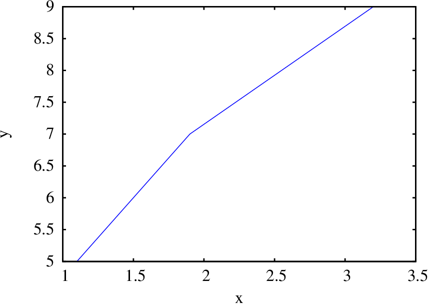

Maxima é um pacote de software livre. Pode ser descarregado
livremente, funciona em vários sistemas diferentes e existe muita
documentação que também pode ser copiada livremente. O sítio Web do
Maxima é
http://maxima.sourceforge.net
Maxima é um dos sistemas de álgebra computacional (CAS) mais
antigos. Foi criado pelo grupo MAC no MIT, na década de 60 do século
passado, e inicialmente chamava-se Macsyma (project MAC's
SYmbolic MAnipulator). Macsyma foi desenvolvido originalmente para
os computadores de grande escala DEC-PDP-10 que eram usados em várias
instituições académicas.
Na década de 80, foi portado para várias novas plataformas e uma das
novas versões foi denominada Maxima. Em 1982 o MIT decidiu
vender Macsyma como software proprietário e, simultaneamente, o
professor William Schelter da Universidade de Texas continuou a
desenvolver o Maxima. Na segunda metade da década de 80
apareceram outros sistemas CAS proprietários, por exemplo,
Maple e Mathematica, semelhantes a Macsyma. Em
1998, o professor Schelter obteve autorização do DOE (Department
of Energy), que tinha os direitos de autor sobre a versão original
do Macsyma, para distribuir livremente o código fonte do
Maxima. A partir de 2001, ano em qu William Schelter morreu, um
grupo de voluntários continuam a desenvolver e distribuir o
Maxima.
No caso dos sistemas CAS, as vantagens do software livre são
bastante importantes. Quando um método falha ou dá respostas muito
complicadas é bastante útil ter acesso aos pormenores da implementação
subjacente ao sistema. Por outro lado, no momento em que começarmos a
depender dos resultados de um sistema CAS, é desejável que a
documentação dos métodos envolvidos esteja disponível e que não
existam impedimentos legais que nos proíbam de tentar descobrir ou
modificar esses métodos.
A.2. Interfaces do Maxima
Existem várias interfaces diferentes para trabalhar com o Maxima. Pode ser
executado desde uma "consola", ou a partir de alguma das suas várias
interfaces gráficas como: wxmaxima,
imaxima ou xmaxima. A
figura A.1 mostra no lado esquerdo o Maxima a ser executado numa
consola e no lado direito os mesmos comandos na interface gráfica imaxima.
Na consola os resultados são mostrados usando apenas caracteres ASCII, mas
ocupando várias linhas no caso de fracções ou potências. Nas interfaces
gráficas as equações são convertidas em pequenos gráficos, tornando-as
mais legíveis, mas se o resultado for muito comprido, o gráfico
resultante pode tornar-se impossível de apresentar no ecrã. Os gráficos
de funções normalmente são apresentados em janelas separadas, mas nas
interfaces gráficas podem ser incluídos dentro da própria janela da
interface.
Figura A.1: Maxima na consola e na interface gráfica imaxima.
As interfaces gráficas estabelecem uma ligação (socket) com o
programa Maxima, enviam através dessa ligação os comandos que o
utilizador escreve, e apresentam as respostas dadas pelo Maxima.
A interface imaxima é executada dentro do editor de texto
Emacs que inclui as
funções próprias de um editor de texto avançado. Diferentes cores são
usadas para distinguir os comandos de entrada e de saída e os comandos
que já foram processados aparecem em negrito.
A.3. Entrada e saída de dados
Quando se inicia uma sessão do Maxima, aparece a
marca (%i1), que quer
dizer input 1. Ao lado dessa marca deve
escrever-se um comando válido, terminado pelo símbolo de ponto e
vírgula. Premindo a tecla de fim de linha, o comando que foi escrito
fica associado a uma variável interna %i1 e o resultado é apresentado a seguir à
marca (%o1), que quer
dizer output 1, ficando internamente
associado a outra variável %o1.
A seguir aparece a marca (%i2), que permite
escrever um segundo comando e assim sucessivamente. O uso mais básico
do Maxima é como calculadora, para realizar contas, como nos seguintes
exemplos:
(%i1)2.5*3.1;
(%o1)
(%i2)5.2*log(2);
(%o2)
O resultado (%o2) mostra dois
aspetos importantes no Maxima. Em primeiro lugar, o logaritmo natural
de 2 não foi calculado, porque o resultado é um número irracional que
não pode ser representado de forma numérica exata. A outra coisa
importante é que o símbolo * e
os parêntesis, que são sempre necessários nos comandos de entrada para
indicar um produto e argumento de uma função, não foram escritos na
saída. Isto é devido a que a saída está a ser apresentada, por
omissão, num modo denominado display2d em que a saída é apresentada numa forma
semelhante a como se costumam escrever expressões algébricas nos
livros. Num livro, a expressão "5.2 log 2" deve ser interpretada como o
produto de 5.2 vezes o logaritmo de 2; no entanto, se essa expressão
fosse inserida no Maxima, dava um erro, porque a sintaxe do Maxima
exige que entre o número 5.2 e a função logaritmo tem de haver algum
operador e o argumento da função logaritmo (ou qualquer outra função)
tem de estar entre parêntesis. A variável
%o2 sim está associada
internamente à expressão correta que pode ser inserida novamente no
Máxima sem produzir erros de sintaxe.
Para consultar a informação do manual sobre alguma das funções ou
variáveis especiais, por exemplo, a função
log usada no
último comando, usa-se a função
describe,
que pode ser abreviada com um símbolo de interrogação seguido pelo
nome da função ou variável a consultar:
(%i3)? log
– Function: log (<x>)
Represents the natural (base e) logarithm of <x>.
Maxima does not have a built-in function for the base 10 logarithm
or other bases. 'log10(x) := log(x) / log(10)' is a useful
definition.
…
A.4. Números
Maxima aceita números reais e complexos. Os números reais podem ser
inteiros, racionais, por exemplo 3/5, ou números de vírgula flutuante,
por exemplo 2.56 ou 25.6e-1, que é uma forma abreviada de escrever
25.6×10−1. Números irracionais, como
sqrt(2) (raiz
quadrada de 2) ou log(2) (logaritmo natural de 2) são mantidos
nessa forma, sem serem aproximados por números de vírgula flutuante, e
cálculos posteriores como sqrt(2)^2 ou exp(log(2)) produzem o resultado exato 2.
Normalmente, o tipo de número usado "contagia" os resultados
subsequentes. Por exemplo, se em vez de se escrever log(2) fosse escrito
log(2.0), o
resultado seria uma aproximação em vírgula flutuante para o
logaritmo natural de 2. Outra forma de obter uma aproximação
em vírgula flutuante consiste em usar a função
float. Por
exemplo, o resultado (%o2)
obtido acima ficou associado à variável
%o2. Para obter a representação em
vírgula flutuante desse número, escreve-se:
(%i4)float (%o2);
(%o4)
A função float representou o
produto 5.2 log(2) de forma aproximada, com 16 algarismos,
usando representação de vírgula flutuante. A representação de vírgula
flutuante usada no Maxima usa 64 bits para representar cada número, de
forma que se conseguem obter entre 15 e 17 algarismos significativos;
esse formato é conhecido como precisão dupla (em
inglês, double precision).
Algo que costuma causar confusão é que esses números de vírgula
flutuante estão a ser representados internamente em sistema binário e
não no sistema decimal; assim sendo, alguns números que se conseguem
representar de forma exata no sistema decimal como, por exemplo, 0.1,
não podem ser representados de forma exata no sistema binário. É o que
acontece por exemplo com a fracção 1/3 no sistema decimal, que em
formato de vírgula flutuante precisava de um número infinito de
algarismos para ser representada: 0.333… (num sistema de base 3
sim pode ser representada de forma exata). No sistema binário as
fracções com número infinito de algarismos não são as mesmas do que no
sistema decimal. Observem-se os seguintes resultados, que são
perfeitamente corretos e iguais em qualquer sistema que use sistema
binário com precisão dupla, mas que parecem estranhos para alguém
habituado a trabalhar no sistema decimal:
(%i5)2*0.1;
(%o5)
(%i6)6*0.1;
(%o6)
A explicação do resultado anterior é que o número 0.1 não pode ser
escrito de forma exata usando 64 bits binários. Assim sendo, o
resultado de multiplicar 2 vezes 0.1 não é exatamente igual a 0.2, mas
o número decimal com 16 algarismos mais próximo desse resultado é
0.2000000000000000 e, por isso, o resultado aparece como se fosse 0.2,
embora não seja exatamente isso. No caso de 6*0.1, em precisão dupla,
o número decimal com 16 casas decimais mais próximo é
0.6000000000000001. Alguns sistemas de cálculo numérico ignoram as
últimas casas decimais, apresentando o resultado como 0.6, mas sempre
que estejam a usar precisão dupla binária, esse número internamente
não é exatamente 0.6.
Se o número 1/3 tivesse de ser representado no sistema decimal, usando
apenas 3 algarismos, a representação mais aproximada seria
333/103, ou seja, 0.333. No sistema binário com precisão
dupla usam-se 52 algarismos binários e, então, o numerador tem de ser
menor do que 252 e o denominador deve ser da forma
. A
função rationalize do Maxima
mostra a representação aproximada, na forma de uma fracção, que está a
ser usada para um número. Por exemplo,
(%i7)rationalize (0.1);
(%o7)
O numerador é menor que 252 (e maior que 251) e
o denominador é exatamente igual a 255. Para que o
resultado fosse exatamente igual a 0.1, o denominador devia ser dez
vezes maior que o numerador, ou seja, devia terminar em 70 em vez de
68, mas teve de ser usada a potência de 2 mais próxima.
Para evitar os erros numéricos inerentes ao sistema de vírgula
flutuante, pode usar-se frações; por exemplo, 1/10 em vez de
0.1. Existe também um formato próprio do Maxima que permite usar um
número arbitrário de algarismos significativos para números de vírgula
flutuante. Esse formato chama-se big float e é indicado usando
"b", em vez de "e" nos expoentes, por exemplo, o número
2.56×1020, escrito como 2.56e20, é representado em
precisão dupla, com 16 algarismos significativos, e operações feitas
com esse número produzem outros números de precisão dupla, com 16
algarismos significativos; mas o mesmo número, escrito como 2.56b20, é
inserido no formato big-float e quando
entra em operações matemáticas dá origem a outros números nesse
formato, que podem ter mais algarismos significativos até um máximo
fixado pelo valor da variável fpprec (floating-point
precision).
A função bfloat permite converter um número para o
formato big-float e o valor predefinido
de fpprec é 16. Por exemplo, para obter a
aproximação do resultado (%o2)
com 60 algarismos significativos, usam-se os seguintes comandos:
A letra b e o número 0 no fim do resultado (%o9) indicam que o número
é big-float e deve ser multiplicado por
100 = 1.
No resto deste apêndice, e em todos os capítulos do livro, todos os
resultados serão arredondados automaticamente para 4 algarismos
significativos. Isso consegue-se alterando o valor da variável do
sistema fpprintprec
(%i10)fpprintprec: 4;
(%o10)
Internamente os números de precisão dupla continuarão a ter 16
algarismos significativos e os
números big-float o número de algarismos
estabelecido por fpprec; no entanto, no
momento de serem apresentados no ecrã, serão arredondados para 4
algarismos significativos. Se em algum momento se pretende ver todos
os algarismos associados internamente a um número, será necessário dar
a fpprintprec o seu valor habitual de 0.
A.5. Variáveis
Para associar uma variável a um valor usa-se o símbolo
":" e não
o símbolo de igualdade "=", que é utilizado para definir equações
matemáticas. O nome das variáveis pode ser qualquer combinação de
letras, números e os símbolos % e _, mas o primeiro caráter
não pode ser um número. Maxima faz
distinção entre maiúsculas e minúsculas. Por exemplo:
as variáveis a, b,
c e Raiz1 ficaram
associadas aos valores numéricos 2, −2, −4 e 2, e a
variável d ficou associada a uma
expressão.
Observe-se que a entrada (%i11) terminou-se
com o símbolo $, em vez de ponto e
vírgula. Isso faz com que o comando seja executado, mas sem que o
resultado seja apresentado no ecrã. De qualquer forma a variável
%o11 ficou associada ao resultado da entrada
(%i11) e pode ser referido
posteriormente, embora o seu valor não tenha sido mostrado. Na entrada
(%i12) mostra-se como associar
valores a várias variáveis com um único comando. Na entrada
(%i13), quando se escreve o nome de uma
variável, a saída é o valor associado a ela; se não tiver nenhum valor
associado, a saída será o próprio nome da variável. Na expressão dada
para a variável Raiz1, foram substituídos os
valores numéricos associados às variáveis a, b e
c e o resultado foi associado à
variável, enquanto que a variável
d ficou associada a uma expressão que
depende de z, porque essa variável não
estava associada a nenhum valor numérico.
Para eliminar o valor associado a uma variável usa-se
remvalue; no
exemplo seguinte remove-se o valor associado
a a e associa-se a Raiz1 uma expressão que depende
de a:
Para eliminar os valores atribuídos a todas as variáveis
escreve-se remvalue(all). Observe-se que
uma variável pode estar associada a um valor numérico, a uma expressão
algébrica ou a outros objetos do Maxima.
Para substituir uma variável numa expressão por um valor dado, usa-se
o comando subst; por
exemplo, para obter o valor da expressão Raiz1 no caso em que a é igual a 1 e aproximar o resultado exato a um
número de vírgula flutuante, usam-se os seguintes comandos:
estes dois últimos comandos não modificaram a expressão associada à
variável Raiz1 que continua
igual.
Maxima define internamente algumas variáveis, com nomes a começar pelo
símbolo %. Alguns exemplos, são as
variáveis %i2 e
%o2, associadas aos comandos
inseridos e os seus resultados. O símbolo %
representa o último resultado obtido; por exemplo, no comando
(%i19) bastava escrever apenas
%, em vez de
%o18.
Convém não usar nomes de variáveis iguais aos nomes de funções do
Maxima, embora seja possível ter funções, variáveis e outros objetos
com os mesmos nomes.
Uma variável também pode estar associada a uma equação matemática; por
exemplo:
(%i20)segundalei: F = m*a;
(%o20)
A maior parte dos comandos inseridos são simplificados pelo Maxima
antes de serem executados. Neste caso, a simplificação consistiu em
reordenar as variáveis no produto m*a em ordem
alfabética. Se alguma das 3 variáveis F, m
ou a tivesse sido associada a
algum objeto, esse objeto teria sido substituído, antes de se associar
a equação resultante à variável
segundalei. Neste caso nenhuma
das 3 variáveis tinha sido associada a nenhum objeto; se a seguir
fosse associado um valor a uma dessas variáveis, a equação que já foi
associada a segundalei não é
alterada, como mostram os seguintes comandos:
(%i21)a: 3;
(%o21)
(%i22)segundalei;
(%o22)
Para substituir valores nessa equação já associada à
variável segundalei, há que usar
o comando subst; por
exemplo,
(%i23)subst([m=2, 'a=5], segundalei);
(%o23)
Observe-se que quando se substituem várias variáveis numa expressão é
necessário colocar todos os valores das variáveis, separados por
vírgulas e entre parêntesis retos. O apóstrofo antes
de a foi usado para impedir
que a fosse substituída pelo
valor associado a ela; se não tivesse sido usado o apóstrofo, a
expressão "a=5" ficava "3=5" e nenhum valor seria
atribuído à variável a na
equação associada a segundalei:
(%i24)subst([m=2, 3=5], segundalei);
(%o24)
A.6. Listas
Uma variável pode também ser associada a uma lista de valores, que são
colocados entre parêntesis retos, separados por vírgulas. Por exemplo,
o comando seguinte associa a variável quadrados a uma lista com os quadrados dos 5
primeiros números inteiros positivos:
(%i25)quadrados: [1, 4, 9, 16, 25]$
Muitas das operações entre números realizadas no Maxima podem também
ser realizadas com listas. Por exemplo, para obter outra lista em que
cada elemento é a raiz quadrada do respetivo elemento na lista
anterior, multiplicado por 3, basta escrever:
(%i26)3*sqrt(quadrados);
(%o26)
Os elementos da lista são enumerados com índices inteiros a começar
por 1. Para referir-se a um elemento na lista, escreve-se o seu índice
entre parêntesis retos; por exemplo, o terceiro elemento da
lista quadrados é 9 que se extrai
assim:
(%i27)quadrados[3];
(%o27)
Uma função muito útil para criar listas é makelist, que expande uma
expressão atribuindo diferentes valores a uma variável. O primeiro
argumento para makelist é a
expressão, o segundo argumento é o nome da variável que será
substituída na expressão anterior por uma sequência de valores que vão
desde um valor inicial até um valor final definidos pelo terceiro e
quarto argumentos. Se houver um quinto argumento, será o incremento
usado para os valores da variável; caso contrário, o incremento da
variável será 1. Dois exemplos do seu uso são os seguintes
(%i28)cubos1: makelist ( i^3, i, 1, 5 );
(%o28)
(%i29)cubos2: makelist ( i^3, i, 2, 6, 0.6);
(%o29)
Na primeira lista foram calculados os cubos de 1, 2, 3, 4 e 5. Na
segunda, foram calculados os cubos de 2, 2.6, 3.2, 3.8, 4.4, 5.0 e
5.6. Observe-se que os cubos dos números de vírgula flutuante
produziram números de vírgula flutuante, que foram automaticamente
arredondados para 4 algarismos significativos, devido ao valor dado à
variável fpprintprec
em (%i10), enquanto que o cubo do número
inteiro 2 deu como resultado também um inteiro.
O terceiro argumento para a função makelist pode ser também outra lista, com os
valores que deverão ser substituídos para a variável do segundo
argumento. Por exemplo, para criar uma lista com os cubos de 5, -3.2b0
e
, usa-se:
(%i30)makelist ( i^3, i, [5, -3.2b0, x^2]);
(%o30)
A.7. Constantes
Existem algumas constantes importantes já predefinidas no Maxima. Os
seus nomes costumam começar com o símbolo %. Três constantes importantes são o número
,
representado por %pi, o número de Euler,
, base dos logaritmos naturais, representado por %e, e o número imaginário
,
representado por %i.
Tanto %pi como %e são números irracionais, que não podem ser
representados de forma numérica exata, mas pode obter-se uma
aproximação numérica com 16 algarismos significativos, usando a
função float, ou com um número
de algarismos significativos diferente, usando a
função bfloat e a
variável fpprec.
O número %i é útil para
trabalhar com números complexos. Por exemplo, o produto entre dois
números complexos:
(%i31)(3 + %i*4)*(2 + %i*5);
(%o31)
Para que no resultado anterior sejam apresentadas a parte real e a
parte imaginária do resultado, usa-se a função rectform (que
significa rectangular form):
(%i32)rectform(%);
(%o32)
A.8. Ficheiros de comandos
As interfaces gráficas têm opções no menu que permitem guardar todos
os comandos escritos durante uma sessão de trabalho no Maxima ou
executar os comandos num ficheiro gravado previamente. Por exemplo, no
Xmaxima essa opção é "Save Maxima Input to
File" no menu "File". O
ficheiro gravado com essa opção pode ser carregado mais tarde no
Maxima e todos os comandos no ficheiro serão executados como se
tivessem sido escritos sequencialmente (no caso do Xmaxima, com a
opção "Batch File" no menu
"File"). Mas é preferível usar
as funções próprias do Maxima,
stringout("ficheiro",input), para gravar os comandos num
ficheiro chamado "ficheiro", e
batch("ficheiro"), para executar um ficheiro gravado
previamente. Essas funções funcionam igual em qualquer interface ou na
consola (consulte a documentação dessas funções).
O ficheiro criado é um ficheiro de texto simples, que pode ser editado
com um editor de texto. Os comandos inseridos aparecem todos sem os
identificadores (%i1),
(%i2), etc, tornando necessário ter
cuidado com os comandos que incluem referências a resultados
anteriores, %o1,
%o2, etc, já que quando o ficheiro seja
executado mais tarde, os números atribuídos a esses resultados podem
ser diferentes. Dentro do ficheiro podem incluir-se comentários, que
começam com os símbolos /* e
terminam com os símbolos */ e
podem ocupar várias linhas. Os comandos introduzidos diretamente no
Maxima ou escritos nesse ficheiro podem também ter espaços em branco
entre números, operadores, variáveis e outros objetos, para torná-los
mais legíveis e cada comando também pode ocupar várias linhas.
Uma forma eficiente de trabalhar no Maxima consiste em preparar
previamente um ficheiro de texto, chamado ficheiro
"batch", com os comandos que
serão usados, e a seguir carrega-se esse ficheiro com a
função batch("ficheiro"), onde "ficheiro" é o nome
completo do ficheiro. Dessa forma, se houver um erro que exige que
todos os comandos sejam inseridos novamente, bastará corrigir o
ficheiro e carregá-lo novamente. Nesse ficheiro escrevem-se unicamente
os comandos, sem incluir as marcas (%i1),
(%i2),… que serão atribuídas
automaticamente quando o ficheiro seja executado.
Pode também ser útil gravar todo o que aparece no ecrã numa sessão de
trabalho no Maxima. No caso de Xmaxima, usa-se a opção
"Save Console to File" e se o
Maxima for executado desde o editor de texto Emacs, basta gravar o
ficheiro. Esse ficheiro serve como informação, mas não pode ser
utilizado como ficheiro batch.
Alguns comandos que costumam ser usados novamente em sessões de
trabalho posteriores, por exemplo, a definição de uma função usada com
frequência, podem ser colocados num ficheiro que depois é carregado
usando-se a função batch. Se o
nome do ficheiro não inclui o caminho para o diretório onde se
encontra, será procurado primeiro no diretório atual e logo num
diretório onde o Maxima procura ficheiros executáveis do utilizador. A
localização desse diretório pode ser descoberta examinando o conteúdo
da variável maxima_userdir.
Para que um ficheiro batch seja carregado
automaticamente cada vez que se inicia uma nova sessão do Maxima,
deverá ter o nome maxima-init.mac e estar localizado no diretório
onde são procurados ficheiros executáveis do utilizador. Por exemplo,
as sessões de Maxima nos capítulos deste livro são executadas num
sistema onde existe um ficheiro maxima-init.mac, no diretório
"/home/username/.maxima",
com o seguinte conteúdo:
ratprint: false$ fpprintprec: 4$
cada vez que se inicia o Maxima, a variável especial ratprint fica com valor lógico falso, que faz com
que não apareçam advertências de que um número de vírgula flutuante
foi aproximado automaticamente para um número racional, e a variável
especial fpprintprec fica com
valor de 4, o que faz com que os resultados de vírgula flutuante sejam
arredondados para 4 algarismos significativos. Qualquer outro comando
válido do Maxima pode ser incluído nesse ficheiro, mas há que ter
cuidado de não incluir comandos que produzam erros que podem bloquear
o arranque do Maxima.
A.9. Álgebra
As expressões podem incluir operações matemáticas com variáveis
abstratas. Por exemplo:
(%i33)3*x^2 + 2*cos(t)$
Essas expressões podem ser depois manipuladas, produzindo novas
expressões. Por exemplo:
(%i34)%^2 + x^3;
(%o34)
O símbolo de igualdade usa-se para definir equações matemáticas; por
exemplo:
(%i35)3*x^3 + 5*x^2 = x - 6;
(%o35)
Para encontrar as raízes de um polinómio pode usar-se a
função allroots; por exemplo:
(%i36)allroots(%);
(%o36)
,
Há duas raízes complexas e uma real. As três raízes foram colocadas
numa lista. Para extrair, por exemplo, o lado direito na terceira raiz
na lista, usa-se a função rhs
(right-hand side):
(%i37)rhs(%[3]);
(%o37)
A variável x permanece indefinida, já que o
sinal de igualdade não é usado para associar valores numéricos às
variáveis. As raízes obtidas em (%o36) são aproximadas e não exatas. Em alguns
casos, as raízes podem ser calculadas de forma algébrica exata, usando
o comando solve
que também resolve outros tipos de equações diferentes de
polinómios. Por exemplo, o uso de solve para encontrar as
raízes do polinómio acima é o seguinte:
(%i38)solve ( 3*x^3 + 5*x^2 = x - 6, x )$ (%i39)float ( rectform (%));
(%o39)
,
O resultado exato encontrado pela função solve ocupa várias linhas e não foi apresentado no
ecrã; apenas foi apresentada a aproximação dessas raízes para números
de vírgula flutuante.
Lembre-se que quando já está associado um valor a uma variável, deverá
escrever-se um apostrofo antes do nome dessa variável para poder ser
usada como variável algébrica indefinida. Ou também pode eliminar-se o
valor associado à variável usando a função remvalue.
Para resolver um sistema de equações, que podem ser lineares ou não
lineares, o primeiro argumento para o comando solve deve ser uma lista com as equações e o
segundo uma lista com os nomes das variáveis; a lista das equações ou
cada equação podem ser previamente associadas a alguma variável. Por
exemplo:
O resultado foi uma lista dentro de outra lista, porque a primeira
lista engloba os valores das variáveis e a segunda lista as várias
soluções do sistema, que neste caso foi apenas uma. O sistema anterior
também podia ter sido resolvido com o comando linsolve, em vez
de solve, por tratar-se de um
sistema de equações lineares.
Maxima inclui outras funções para trabalhar com expressões
algébricas. Por exemplo, para expandir produtos e potências de
expressões usa-se expand.
(%i43)expand ((x + 4*x^2*y + 2*y^2)^3);
(%o43)
A função factor é usada para fatorizar expressões. Outras
funções úteis para simplificar expressões algébricas
são ratsimp, radcan e xthru. Entre várias expressões equivalentes o
conceito de simplicidade é relativo e depende do gosto de cada um;
assim sendo, diferentes funções de simplificação podem produzir
expressões diferentes, embora equivalentes. Em cada caso é conveniente
experimentar com diferentes funções para decidir a forma preferida
para apresentar uma expressão. Também algumas funções, como por
exemplo ratsimp, podem produzir
resultados mais simples quando aplicadas uma segunda vez.
A função subst, que já foi usada
para substituir valores numéricos numa expressão, pode ser usada
também para substituir outras expressões; por exemplo, para substituir
por
, e
pelo valor numérico 2 no
resultado (%o43),
escreve-se:
(%i44)subst([x=1/z, y=2], %o43);
(%o44)
para reduzir tudo a um denominador comum e guardar o resultado na
variável res uma possibilidade é escrever:
(%i45)res: ratsimp(%);
(%o45)
As expressões algébricas são representadas internamente como listas;
como tal, é possível usar nelas as funções do Maxima para listas. Por
exemplo, a função length calcula o comprimento de uma lista; essa
função aplicada a uma expressão calcula o número de termos; por
exemplo
(%i46)length(res);
(%o46)
Como a expressão res foi
reduzida a uma única fração, os dois termos contabilizados
por length são o denominador e o
numerador; assim sendo, a função first, que extrai o primeiro elemento de uma lista,
mostrará unicamente o numerador da expressão associada
a res
(%i47)first(res);
(%o47)
e o comprimento dessa nova expressão é:
(%i48)length(%);
(%o48)
Cada um dos sete elementos dessa lista são os sete termos somados
em (%o47). Uma expressão que já
não pode ser separada em mais partes, por exemplo,
, chama-se
um átomo; as funções que esperam uma lista como argumento
produzem uma mensagem de erro quando lhes for dada como argumento um
átomo. A função atom diz se o seu argumento é um átomo ou não.
Outra função muito útil para trabalhar com listas é a função
map, que permite
aplicar uma função dada a cada elemento de uma lista. No caso de uma
expressão racional, pode usar-se para aplicar uma função ao numerador
e ao denominador. Por exemplo, observe-se a diferença entre expandir
uma expressão racional e expandir o numerador e denominador por
separado:
A tabela A.1 mostra os nomes das
principais funções trigonométricas no Maxima. As funções que esperam
que o argumento de entrada seja um ângulo, interpretam o argumento de
entrada em radianos e não em graus, já que Maxima conhece algumas
propriedades dessas funções, tal como as suas séries de potências, que
são válidas apenas quando o ângulo é medido em radianos. O resultado
das funções inversas é um ângulo em radianos.
Tabela A.1: Funções trigonométricas
Função
Descrição
sin(x)
Seno
cos(x)
Cosseno
tan(x)
Tangente
sec(x)
Secante
csc(x)
Cossecante
cot(x)
Cotangente
asin(x)
Seno inverso
acos(x)
Cosseno inverso
atan(x)
Tangente inversa
atan2(y,x)
Tangente inversa
asec(x)
Secante inversa
acsc(x)
Cossecante inversa
acot(x)
Cotangente inversa
Todas as funções inversas com um único argumento, produzem um ângulo
entre 0 e
. Por exemplo:
(%i52)acos(-0.5);
(%o52)
(%i53)acos(-1/2);
(%o53)
Observe-se que o resultado foi exato quando o argumento da função foi
escrito de forma exata, usando um número racional. A
função atan2
necessita dois argumentos, as coordenadas cartesianas
e
de um
ponto, e produz um ângulo que pode estar em qualquer um dos 4
quadrantes (entre
e
), que é o ângulo entre o segmento que
passa pela origem e esse ponto e o semieixo positivo dos
. Para
converter o ângulo em radianos para graus, multiplica-se por 180 e
divide-se por
, como no exemplo seguinte:
(%i54)180*atan2(-1,-sqrt(3))/%pi;
(%o54)
Para passar de graus para radianos, multiplica-se por
e
divide-se por 180. Por exemplo, o seno de 60° é:
(%i55)sin(60*%pi/180);
(%o55)
Existem também algumas funções para simplificar expressões
trigonométricas. A função trigexpand serve para expandir senos ou cossenos
de somas ou diferenças de ângulos:
(%i56)trigexpand(sin(u+v)*cos(u)^3);
(%o56)
A função trigreduce tenta expandir a expressão de forma a
que cada termo só tenha uma função trigonométrica.
(%i57)trigreduce(%);
(%o57)
A função trigsimp aplica a identidade trigonométrica
e as relações entre as funções trigonométricas,
para tentar escrever uma expressão apenas em termos das funções seno e
cosseno. Por exemplo:
A forma mais simples de representar funções matemáticas no Maxima
consiste em usar expressões. Por exemplo, para representar a função
, associa-se a expressão no lado direito a uma
variável
(%i60)f: 3*x^2 - 5*x;
(%o60)
A derivada da função
, em ordem a
, calcula-se usando a
função diff
(%i61)diff (f, x);
(%o61)
e a primitiva em ordem a
calcula-se com a
função integrate
(%i62)integrate (f, x);
(%o62)
O valor da função num ponto, por exemplo,
, pode ser calculado
substituindo
por 1 com a função subst, ou com a função at
(%i63)at (f, x=1);
(%o63)
Maxima também permite definir funções, que serão discutidas com mais
pormenor na seguinte secção, e que podem ser usadas para representar
funções matemáticas. Por exemplo, a mesma função
também podia ter sido definida assim:
(%i64)f(x) := 3*x^2 - 5*x;
(%o64)
O valor da função num ponto neste caso obtém-se mais diretamente, mas
no cálculo da derivada e a primitiva é necessário escrever a função e
a variável no seu argumento:
Observe-se que nos comandos (%i66)
e (%i67) está realmente a derivar-se ou
integrar-se uma expressão para
e não uma função do Maxima. O que
acontece é que quando se escreve
f(x) e x não está
associada a nenhum valor, a função produz como resultado uma expressão
que é logo derivada ou primitivada pelas funções diff ou integrate. Mas algumas funções do Maxima não
produzem como resultado expressões matemáticas; por exemplo:
(%i68)h(x) := if x < 0 then x/2 else x^2;
(%o68)
Os valores em diferentes pontos, por exemplo
, são obtidos sem
problema, mas as funções diff
e integrate não conseguem
calcular a derivada e a primitiva, porque o resultado
de h(x)
não é uma expressão matemática (inclui comandos específicos do
Maxima: if, then e else):
(%i69)diff (h(x), x);
(%o69)
Quando a função diff não
consegue obter a derivada da expressão dada, tal como aconteceu no
caso anterior, dá como resultado o mesmo comando de entrada, que neste
caso foi simplesmente apresentado de forma diferente no ecrã, mas
internamente o conteúdo da variável %o69 é diff(if x
< 0 then x/2 else x^2,x).
Quando uma expressão depende de várias variáveis, diff calcula a derivada parcial:
(%i70)diff (x^2*y-y^3, x);
(%o70)
Um integral definido calcula-se também com a função integrate, mas incluindo os limites de integração
a seguir à variável de integração; por exemplo:
(%i71)integrate (1/(1 + x^2), x, 0, 1);
(%o71)
A.12. Funções
Uma função no Maxima é um programa com algumas variáveis de entrada e
uma saída. O Maxima tem uma linguagem simples de programação que
permite definir essas funções e também é possível usar a linguagem
Lisp, que é a linguagem em que o código do Maxima está
escrito. É ainda possível redefinir qualquer uma das funções que
já têm sido referidas; por exemplo, se na versão do Maxima a ser usada
alguma função tem um bug que já foi corrigido numa versão mais
recente, é possível carregar a nova versão dessa função e, a menos que
introduza conflitos com outras funções antigas, deverá funcionar
corretamente.
Um primeiro exemplo consiste na criação de uma
função fact que calcule o
fatorial de um número inteiro (no Maxima basta colocar o símbolo !
após um número para obter o seu fatorial, mas aqui será criada outra
versão do mesmo programa):
(%i72)fact(n):=ifn<=1 then 1 else n*fact(n-1);
(%o72)
(%i73)fact(6);
(%o73)
Não é preciso usar nenhum comando para produzir a saída, já que a
saída de um programa é sempre a que for produzida pelo último comando
executado pela função. Uma função pode usar-se a si própria de forma
recursiva, como foi feito neste exemplo.
Vários comandos do Maxima podem ser agrupados, entre parêntesis e
separados por vírgulas. Esses comandos são executados sequencialmente
e o resultado do último comando será o resultado de todo o grupo; os
comandos podem ser indentados e podem ocupar mais do que uma linha. O
seguinte exemplo define uma função que soma todos os argumentos que
lhe sejam dados:
(%i74)soma([v]) := block([s: 0], for i:1 thru length(v) do (s : s + v[i]), s)$ (%i75)soma (45,2^3);
(%o75)
(%i76)soma (3,log(x),5+x);
(%o76)
Usou-se uma lista no argumento da função, indicando que a função
admite qualquer número de variáveis de entrada (ou até nenhuma) e
todas as variáveis de entrada são colocadas numa lista associada á
variável local v. A
função block
foi usada para definir outra variável
local s, com valor inicial 0, que no fim
terá a soma de todas as variáveis de entrada. O primeiro elemento dado
a block deve ser uma lista, que
pode ter qualquer número de variáveis locais, com ou sem valores
iniciais, e a seguir a essa lista vem o resto da função. O
comando for itera a variável
local i, neste caso desde 1 até
o comprimento da lista v e com
incrementos, por omissão, de 1 (a opção step pode usar-se para modificar o incremento por
omissão). Quando as iterações terminam, escreve-se o nome da
variável s para que o valor associado a ela
fique como saída do programa.
Quando se usa uma função que não existe, não é produzida nenhuma
mensagem de erro, mas na saída do comando aparece a mesma função sem
alteração; por exemplo:
(%i77)2*4*maximo(3,5,2);
(%o77)
Outras funções do Maxima também retornam o mesmo comando de entrada
quando não é possível obter um resultado. Por exemplo:
(%i78)log(x^2+3+x);
(%o78)
Esse comportamento das é muito útil, porque assim é possível alterar
mais tarde os valores dos argumentos e avaliar novamente a função. Por
exemplo, neste último resultado, substituindo a
variável x pelo número de
vírgula flutuante 2.0, o logaritmo já será calculado:
(%i79)subst(x=2.0, %);
(%o79)
A.13. Gráficos
A.13.1. Funções de uma variável
Para traçar o gráfico de uma ou várias funções de uma variável, usa-se
o comando plot2d. Por exemplo, para desenhar o gráfico do
polinómio
, no intervalo de
entre −3 e
1, usa-se o comando:
(%i80)plot2d(3*x^3 + 5*x^2 - x + 6, [x, -3, 1]);
o resultado (%o80) (que não foi
mostrado aqui) é o nome de um ficheiro auxiliar que foi criado e logo
submetido a um programa externo (Gnuplot)
que interpreta os comandos nesse ficheiro e mostra o gráfico numa
janela separada (figura A.2). Passando o
rato sobre um ponto no gráfico, mostram-se as coordenadas desse
ponto.
Figura A.2: Gráfico do polinómio
.
Para traçar os gráficos de várias funções num mesmo gráfico,
colocam-se as funções dentro de uma lista. Por exemplo:
A partir da versão 5.32, existem três opções,
pdf_file,
png_file
e ps_file que
permitem gravar o gráfico num ficheiro em formato PDF, PNG ou
PostScript.
Por exemplo, para gravar o gráfico produzido pelo
comando (%i80) num ficheiro PNG, usa-se o
comando:
O resultado mostra que foram criados dois ficheiros; o primeiro com
nome maxout.gnuplot contém comandos do
Gnuplot que produzem o gráfico e gravam o resultado no segundo
ficheiro, com nome funcao1.png. Como não foi indicado um
caminho completo para o nome do ficheiro na opção png_file, o ficheiro foi criado no diretório do
utilizador. O ficheiro maxout.gnuplot é
um ficheiro de texto simples, que pode ser editado com um editor de
texto e executado, independentemente do Maxima, com o
programa gnuplot:
gnuplot /home/username/maxout.gnuplot
Para produzir a figura A.2 em formato PDF,
usa-se o seguinte comando:
É possível também criar um gráfico de um conjunto de pontos num
sistema com duas coordenadas. As duas coordenadas de cada ponto podem
ser indicadas como uma lista dentro de outra lista com todos os
pontos; por exemplo, para criar um gráfico com os três pontos (1.1,
5), (1.9, 7) e (3.2,9), as coordenadas dos pontos podem ser associadas
a uma lista p:
(%i84)p: [[1.1, 5], [1.9, 7], [3.2, 9]]$
Para criar o gráfico, é necessário dar à função plot2d uma lista que comece com a
palavra-chave discrete, seguida
pela lista de pontos. Neste caso não é obrigatório indicar o domínio
para a variável do eixo horizontal:

Figura A.4: Gráfico de um conjunto de 3 pontos.
Por omissão, os pontos são ligados entre si por segmentos de reta;
para mostrar apenas os pontos, sem segmentos de reta, usa-se a
opção style, com o
valor points.
A.13.4. Pontos e funções
Podem também combinar-se o gráfico de um ou vários conjuntos de pontos
com o gráfico de uma ou várias funções. Nesse caso, cada conjunto de
pontos será representado por uma lista a começar com a
palavra-chave discrete, como na
secção anterior, e cada função será representada por uma expressão; as
listas de pontos e expressões deverão ser colocadas dentro de outra
lista e será necessário indicar o domínio para a variável independente
(eixo das abcissas); é possível também especificar o contradomínio
para a variável dependente (eixo das ordenadas), através da
opção y.
Exemplo A.1
Represente num gráfico os resultados experimentais na tabela, junto
com a curva teórica esperada:
, com
cm/s2
(cm)
(s)
10
0.6
20
0.9
30
1.1
40
1.3
50
1.4
Resolução. O gráfico dos resultados, junto com a curva
esperada, pode ser obtido com os seguintes comandos:
A opção style
em (%i87) indica que o primeiro conjunto de
pontos será ser representado por pontos e a expressão a seguir será
representada com segmentos de recta. O gráfico é apresentado na
figura A.5. A opção y é especialmente útil para limitar os valores
apresentados no eixo vertical, no caso de funções com assimptotas
verticais.
Figura A.5: Gráfico de dados experimentais junto com uma
expressão teórica.
A.13.5. Funções de duas variáveis
Para traçar gráficos de funções de duas variáveis, em 3 dimensões,
usa-se o comando plot3d. Por exemplo, o gráfico na
figura A.6 foi produzido com o comando:
Deslocando o rato enquanto o botão do lado esquerdo estiver premido, a
superfície roda podendo ser vista desde diferentes direções. O
comando plot3d também aceita uma
lista de várias funções a serem representadas no mesmo gráfico. Também
pode usar-se uma lista de 3 funções, que representam as 3 componentes
do vector posição que define uma superfície em 3 dimensões (gráfico
paramétrico).
Existem muitas outras opções para as funções plot2d e plot3d e outras funções gráficas. A secção
"Plotting" no Manual do Maxima descreve essas
funções: http://maxima.sourceforge.net/docs/manual
O gráfico mais elaborado neste livro é a
figura 7.13, que
foi produzida com os seguintes comandos:
A função
a ser representada é menos a primitiva da força
,
dividida pela massa, 0.3. Na lista se foram extraídos os valores de
em que a
força
é nula, ou seja, os pontos onde
tem máximos e mínimos
locais. A lista p são as
coordenadas desses máximos e mínimos e dos pontos onde
é igual a
70 e a 250. Com as coordenadas desses pontos foram construídas 6
linhas horizontais, l1…
l6 e 3 conjuntos de
pontos, rep, max
e min, com as coordenadas dos pontos onde
é igual a 70 e a 250, os máximos locais e os mínimos locais. A
seguir foi criado o gráfico mostrando a função, as linhas horizontais
e os três conjuntos de pontos usando objetos diferentes e finalmente
foi usada a opção label para
escrever alguns números em algumas partes do gráfico.
Problemas
Trace o gráfico de cada uma das seguintes funções,
usando intervalos que mostrem bem a forma das funções.
O gráfico da função
apresenta dois pontos extremos (um mínimo local e um máximo
local). Desenhe o gráfico dessa função. Sabendo que a derivada da
função é nula nos dois pontos extremos, calcule as coordenadas
e
desses dois pontos.
Encontre a equação da circunferência que passa pelos
pontos (−2, 7), (−4, 1) e (4, −5). Sugestão:
a forma geral da equação será
. Para
encontrar as três constantes
,
e
, substitua as coordenadas
de cada um dos 3 pontos dados, e resolva o sistema das 3 equações
obtidas.
Defina uma função fib(n) em Maxima para
calcular qualquer número na sequência de Fibonacci,
= {1, 1, 2,
3, 5, 8,…}, definida por:
Determine a relação
para alguns valores crescentes de
, e mostre que a relação aproxima-se do limite
. O
número
é designado de proporção áurea e no
Maxima está predefinido na constante %phi.
Crie uma função "maximo" que encontre o
máximo de todos os números que lhe sejam dados.
Respostas
2. O máximo local encontra-se em (0.709, 4.30), e o mínimo local em
(3.29, -4.30).